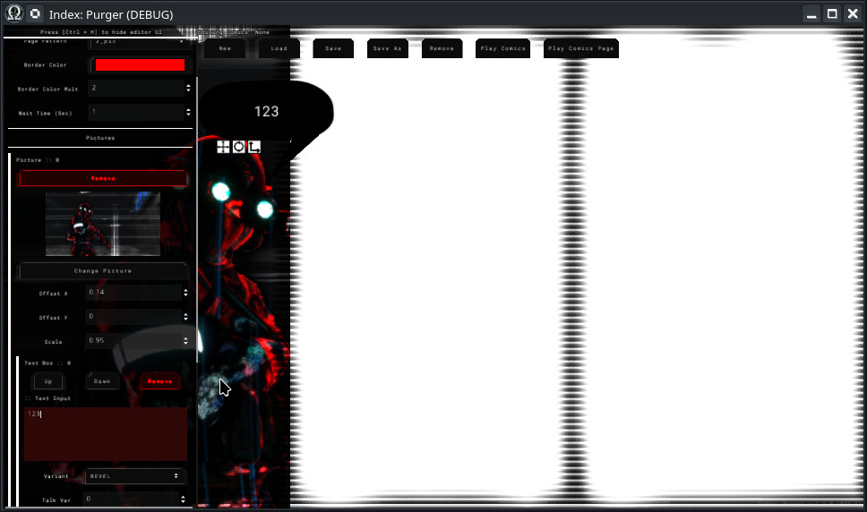

Module: comics_player
Documentation last edited: October 22, 2025 at 10:46 UTC
Description


A comics player that comes along with an editor in
"comics_editor"
location. This is a simple "comics" player that shows some images, text, boxes, text bubbles, glitch effects, etc. Imagery used in comics are presumably rendered in
"comics_renderer"
and might have minor adjustments in any image editor.
Usage example
ComicsPlayer.play_comics_by_name("test0")
Keep in mind
ComicsPlayer
is not handling any cursor control logic. Therefore, you might be interested to use a following setup:
CursorControl.show("comics_player")
ComicsPlayer.play_comics_by_name("test0")
yield(ComicsPlayer, "finished")
CursorControl.deactivate("comics_player")
Technical Side
Script Hierarchy
Core Data
├── comics_data.gd (Root)
│ └── comics_page_data.gd (Pages)
│ └── comics_picture_data.gd (Panels)
│ └── comics_text_box_data.gd (Text/Audio)
│
Editor System
├── comics_editor.gd (Main UI)
├── editor_comic_control.gd (Rendering)
├── editor_relay.gd (Data ↔ UI)
└── text_box_transform_button.gd (Editing Tools)
│
Player System
├── comics_player.gd (Playback Engine)
└── comics_player_test.gd (Test Script)
Core Data
This is the data of comics. Root has data about multiple pages, pages have data about pattern and its panels, panel data contains info about pictures and text boxes. Simple enough, but it is nested for the sake of extensibility.
Core Data
├── comics_data.gd (Root)
│ # Array of pages
│ └── comics_page_data.gd (Pages)
│ # Page data, in this case, it contains pattern info and then an array of pictures filling up this pattern
│ └── comics_picture_data.gd (Panels)
│ # Picture data that has image data as well as array of text boxes tied to this panel
│ └── comics_text_box_data.gd (Text/Audio)
│ # Text box data, contains text info, typewriter settings, voice/audio config, as well as
│ # conditions of "continuing" to the next text box. All of the text boxes are playing one
│ # after another
Editor System
Editor is *trying* to follow
"What You See Is What You Get"
principle, however it doesn't allow seeing all the effects on top without playing the comic fully. However, it does allow to quickly setup all comics data and see how it basically looks like. Main key features of editor system are being non-destructive workflows (you can return whenever you want and original files are untouched) and possibility for very easy preview of all images, audio, text box positioning, pages, as well as possibility to pre-play the comics to see how it would look like in-game.
Editor System
├── comics_editor.gd (Main UI)
│ # The brain of the editor, or, at least, "visual" one for the end-user.
│ # - Manages UI panels, like page list, image selector, text box settings
│ # - Handles saving/loading of comic files stored at...
│ # res://modules/comics_player/assets/comics/
│ # - Coordinates between editing tools and visual preview
├── editor_comic_control.gd (Rendering)
│ # The renderer.
│ # - Takes data from ComicsPageData and displays it in real-time
│ # - Applies shaders for panel borders, image effects
│ # - Handles pattern templates (1_pic, 2_pic, 3_pic, 4_pic, etc)
├── editor_relay.gd (Data ↔ UI)
│ # "Relay" between comic's data and UI
│ # - Connects UI controls (like text inputs) to the actual comic's data
│ # - Updates text boxes when you type, changes styles when you pick one of the variants, etc
└── text_box_transform_button.gd (Editing Tools)
│ # Allows you to move, rotate and scale text boxes
Player System
The player system loads comic files (.tres) and turns them into a "slideshow" with animations, sounds, and click-to-advance controls. Uses data exported by the editor system to show to the player.
Player System
├── comics_player.gd (Playback Engine)
│ # A complex playback script that has a following algorithm:
│ # - Loading the comic
│ # - Preloads images, fonts, audio, sets up timers/animations
│ # - Playing a page
│ # - Loads a pattern scene, places images there
│ # - Animate elements, fade panels, process typewriter effect, play audio
│ # - Wait for input/timer
│ # - Auto-advance after delay OR click a button to continue
│ # - Advancing to the next page to repeat all over again or end the comic, if no pages left to play.
└── comics_player_test.gd (Test Script)
│ # A little test script, kept just in case :)
How to use the comics editor
The system is simple, really... But if you are so hopeless and have to go here to read it all... Well i guess i'll have to yoink some of your RAM to show you ~imagery~.
Firstly you simply switch to
"comics_editor"
location with
change_location comics_editor
in console or by using
dev_menu
By pressing "New Page" you make a new page (wow, unbelievable)
By pressing on a newly made page called "Page 0" you will edit this page's config (super hard, i know)

You can change pattern here
You can also add pictures, tweak its positioning, keep in mind - only after adding a picture you can add text boxes as they are tied directly to a given picture.

When you are done: Just save it, for the first time it'll require you to set a name for your comic's data file, but then pressing "Save" button will save it automatically to a given file.

By pressing a "Play Comics" button - you'll be able to preview how your comics will be played in-game. "Play Comics" plays all the pages. "Play Comics Page" plays only the page you are currently editing.

And i swear to god, if you will have any questions regarding functionality of this editor tool even AFTER all these images...
General Information
Root directories list
assets, docs, src
Nodes
ComicsPlayer
comics_text_layer
comics_editor
editor_comic_control
editor_relay
text_box_transform_button
comics_player_test
Classes
None
Resources
ComicsData
ComicsPageData
ComicsPictureData
ComicsTextBoxData
Other Scripts
None